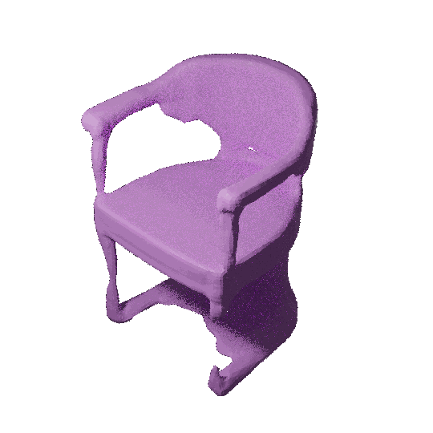
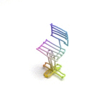
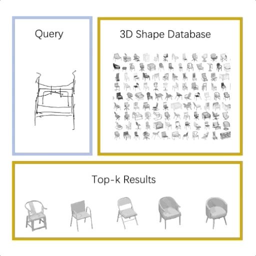

Publications
2023
- Bibtex
3D shape modeling is labor-intensive and time-consuming and requires years of expertise. Recently, 2D sketches and text inputs were considered as conditional modalities to 3D shape generation networks to facilitate 3D shape modeling. However, text does not contain enough fine-grained information and is more suitable to describe a category or appearance rather than geometry, while 2D sketches are ambiguous, and depicting complex 3D shapes in 2D again requires extensive practice. Instead, we explore virtual reality sketches that are drawn directly in 3D. We assume that the sketches are created by novices, without any art training, and aim to reconstruct physically-plausible 3D shapes. Since such sketches are potentially ambiguous, we tackle the problem of the generation of multiple 3D shapes that follow the input sketch structure. Limited in the size of the training data, we carefully design our method, training the model step-by-step and leveraging multi-modal 3D shape representation. To guarantee the plausibility of generated 3D shapes we leverage the normalizing flow that models the distribution of the latent space of 3D shapes. To encourage the fidelity of the generated 3D models to an input sketch, we propose a dedicated loss that we deploy at different stages of the training process.
@inproceedings{luo20233d, abbr = {ICCV}, title = {3D VR Sketch Guided 3D Shape Prototyping and Exploration}, author = {Luo, Ling and Chowdhury, Pinaki Nath and Xiang, Tao and Song, Yi-Zhe and Gryaditskaya, Yulia}, booktitle = {Proceedings of the IEEE/CVF International Conference on Computer Vision}, pages = {9267--9276}, year = {2023}, pdf = {https://openaccess.thecvf.com/content/ICCV2023/papers/Luo_3D_VR_Sketch_Guided_3D_Shape_Prototyping_and_Exploration_ICCV_2023_paper.pdf}, code = {https://github.com/Rowl1ng/3Dsketch2shape}, video = {https://www.youtube.com/watch?v=PCig106t7aM&ab_channel=LingLuo}, slides = {https://drive.google.com/file/d/1HewX7cbp8YTOA0G7b_OsOTolpwIRnS_d/view?usp=sharing}, poster = {https://drive.google.com/file/d/1xTWyCWziSBq7fwTV5EiCird3_DSmu3xs/view?usp=sharing}, img = {../assets/img/publication_preview/interp_98.gif}, arxiv = {2306.10830}, selected = {true} } ICCV3D VR Sketch Guided 3D Shape Prototyping and ExplorationLuo Ling, Chowdhury Pinaki Nath, Xiang Tao, Song Yi-Zhe, and Gryaditskaya YuliaIn Proceedings of the IEEE/CVF International Conference on Computer Vision 20233D shape modeling is labor-intensive and time-consuming and requires years of expertise. Recently, 2D sketches and text inputs were considered as conditional modalities to 3D shape generation networks to facilitate 3D shape modeling. However, text does not contain enough fine-grained information and is more suitable to describe a category or appearance rather than geometry, while 2D sketches are ambiguous, and depicting complex 3D shapes in 2D again requires extensive practice. Instead, we explore virtual reality sketches that are drawn directly in 3D. We assume that the sketches are created by novices, without any art training, and aim to reconstruct physically-plausible 3D shapes. Since such sketches are potentially ambiguous, we tackle the problem of the generation of multiple 3D shapes that follow the input sketch structure. Limited in the size of the training data, we carefully design our method, training the model step-by-step and leveraging multi-modal 3D shape representation. To guarantee the plausibility of generated 3D shapes we leverage the normalizing flow that models the distribution of the latent space of 3D shapes. To encourage the fidelity of the generated 3D models to an input sketch, we propose a dedicated loss that we deploy at different stages of the training process.
2022
- Bibtex
We study the practical task of fine-grained 3D-VR-sketch-based 3D shape retrieval. This task is of particular interest as 2D sketches were shown to be effective queries for 2D images. However, due to the domain gap, it remains hard to achieve strong performance in 3D shape retrieval from 2D sketches. Recent work demonstrated the advantage of 3D VR sketching on this task. In our work, we focus on the challenge caused by inherent inaccuracies in 3D VR sketches. We observe that retrieval results obtained with a triplet loss with a fixed margin value, commonly used for retrieval tasks, contain many irrelevant shapes and often just one or few with a similar structure to the query. To mitigate this problem, we for the first time draw a connection between adaptive margin values and shape similarities. In particular, we propose to use a triplet loss with an adaptive margin value driven by a "fitting gap", which is the similarity of two shapes under structure-preserving deformations. We also conduct a user study which confirms that this fitting gap is indeed a suitable criterion to evaluate the structural similarity of shapes. Furthermore, we introduce a dataset of 202 VR sketches for 202 3D shapes drawn from memory rather than from observation.
@inproceedings{luo2022, title = {Structure-Aware 3D VR Sketch to 3D Shape Retrieval}, author = {Luo, Ling and Gryaditskaya, Yulia and Xiang, Tao and Song, Yi-Zhe}, booktitle = {2021 International Conference on 3D Vision (3DV)}, year = {2022}, arxiv = {2209.09043}, supp = {https://drive.google.com/file/d/11rt_fVuqumWUy_jVMAis4di4KW0bRHJr/view?usp=sharing}, slides = {https://drive.google.com/file/d/1fkKf1N8SoceD_cHdZS0eZutpostHLwyr/view?usp=sharing}, code = {https://github.com/Rowl1ng/Structure-Aware-VR-Sketch-Shape-Retrieval}, poster = {https://drive.google.com/file/d/1MdNsnNXScARlap4UdkW8_Nj2tltzVFxH/view?usp=sharing}, video = {https://youtu.be/hpM9WNLQmjM}, abbr = {3DV}, selected = {true} }3DV
Structure-Aware 3D VR Sketch to 3D Shape RetrievalLuo Ling, Gryaditskaya Yulia, Xiang Tao, and Song Yi-ZheIn 2021 International Conference on 3D Vision (3DV) 2022We study the practical task of fine-grained 3D-VR-sketch-based 3D shape retrieval. This task is of particular interest as 2D sketches were shown to be effective queries for 2D images. However, due to the domain gap, it remains hard to achieve strong performance in 3D shape retrieval from 2D sketches. Recent work demonstrated the advantage of 3D VR sketching on this task. In our work, we focus on the challenge caused by inherent inaccuracies in 3D VR sketches. We observe that retrieval results obtained with a triplet loss with a fixed margin value, commonly used for retrieval tasks, contain many irrelevant shapes and often just one or few with a similar structure to the query. To mitigate this problem, we for the first time draw a connection between adaptive margin values and shape similarities. In particular, we propose to use a triplet loss with an adaptive margin value driven by a "fitting gap", which is the similarity of two shapes under structure-preserving deformations. We also conduct a user study which confirms that this fitting gap is indeed a suitable criterion to evaluate the structural similarity of shapes. Furthermore, we introduce a dataset of 202 VR sketches for 202 3D shapes drawn from memory rather than from observation.
2021
- Bibtex
We present the first fine-grained dataset of 1,497 3D VR sketch and 3D shape pairs of a chair category with large shapes diversity. Our dataset supports the recent trend in the sketch community on fine-grained data analysis, and extends it to an actively developing 3D domain. We argue for the most convenient sketching scenario where the sketch consists of sparse lines and does not require any sketching skills, prior training or time-consuming accurate drawing. We then, for the first time, study the scenario of fine-grained 3D VR sketch to 3D shape retrieval, as a novel VR sketching application and a proving ground to drive out generic insights to inform future research. By experimenting with carefully selected combinations of design factors on this new problem, we draw important conclusions to help follow-on work. We hope our dataset will enable other novel applications, especially those that require a fine-grained angle such as fine-grained 3D shape reconstruction.
@inproceedings{luo2021fine, title = {Fine-Grained VR Sketching: Dataset and Insights.}, author = {Luo, Ling and Gryaditskaya, Yulia and Yang, Yongxin and Xiang, Tao and Song, Yi-Zhe}, booktitle = {2021 International Conference on 3D Vision (3DV)}, pages = {1003--1013}, year = {2021}, organization = {IEEE}, arxiv = {2209.10008}, supp = {https://drive.google.com/file/d/1JXGO1s8pyT7YR26zruDevJwO2XJ4MAE1/view?usp=sharing}, slides = {https://drive.google.com/file/d/1ENUhdXvaFRC-YdFI9ZMzNZJHLTMEePqM/view?usp=sharing}, poster = {https://drive.google.com/file/d/1uMKKy-5-uf1p9kY-WM74mORR0fV-ZCah/view?usp=sharing}, code = {https://github.com/Rowl1ng/Fine-Grained_VR_Sketching}, website = {https://cvssp.org/data/VRChairSketch}, img = {../assets/img/publication_preview/3D_sketch.gif}, abbr = {3DV}, selected = {true} } 3DVFine-Grained VR Sketching: Dataset and Insights.Luo Ling, Gryaditskaya Yulia, Yang Yongxin, Xiang Tao, and Song Yi-ZheIn 2021 International Conference on 3D Vision (3DV) 2021We present the first fine-grained dataset of 1,497 3D VR sketch and 3D shape pairs of a chair category with large shapes diversity. Our dataset supports the recent trend in the sketch community on fine-grained data analysis, and extends it to an actively developing 3D domain. We argue for the most convenient sketching scenario where the sketch consists of sparse lines and does not require any sketching skills, prior training or time-consuming accurate drawing. We then, for the first time, study the scenario of fine-grained 3D VR sketch to 3D shape retrieval, as a novel VR sketching application and a proving ground to drive out generic insights to inform future research. By experimenting with carefully selected combinations of design factors on this new problem, we draw important conclusions to help follow-on work. We hope our dataset will enable other novel applications, especially those that require a fine-grained angle such as fine-grained 3D shape reconstruction.
2020
- Bibtex
Growing free online 3D shapes collections dictated research on 3D retrieval. Active debate has however been had on (i) what the best input modality is to trigger retrieval, and (ii) the ultimate usage scenario for such retrieval. In this paper, we offer a different perspective towards answering these questions – we study the use of 3D sketches as an input modality and advocate a VR-scenario where retrieval is conducted. Thus, the ultimate vision is that users can freely retrieve a 3D model by air-doodling in a VR environment. As a first stab at this new 3D VR-sketch to 3D shape retrieval problem, we make four contributions. First, we code a VR utility to collect 3D VR-sketches and conduct retrieval. Second, we collect the first set of 167 3D VR-sketches on two shape categories from ModelNet. Third, we propose a novel approach to generate a synthetic dataset of human-like 3D sketches of different abstract levels to train deep networks. At last, we compare the common multi-view and volumetric approaches: We show that, in contrast to 3D shape to 3D shape retrieval, volumetric point-based approaches exhibit superior performance on 3D sketch to 3D shape retrieval due to the sparse and abstract nature of 3D VR-sketches. We believe these contributions will collectively serve as enablers for future attempts at this problem.
@inproceedings{luo2020towards, abbr = {3DV}, title = {Towards 3D VR-sketch to 3D shape retrieval}, author = {Luo, Ling and Gryaditskaya, Yulia and Yang, Yongxin and Xiang, Tao and Song, Yi-Zhe}, booktitle = {2020 International Conference on 3D Vision (3DV)}, pages = {81--90}, year = {2020}, organization = {IEEE}, arxiv = {2209.10020}, supp = {https://drive.google.com/file/d/1nm8Taxc4Ji8iHdcjljygEh3v2yIdmbsO/view?usp=sharing}, slides = {https://drive.google.com/file/d/1rhba2VxabDFz93II0Xo6e88i7S4d-puN/view?usp=sharing}, code = {https://github.com/ygryadit/Towards3DVRSketch}, video = {https://youtu.be/7cdij0rSOaE}, poster = {https://drive.google.com/file/d/1ZUzV2QIHcsePXaJbzKb-KdNzzGpAWTR6/view?usp=sharing}, img = {../assets/img/publication_preview/3DV20.gif}, selected = {true} } 3DVTowards 3D VR-sketch to 3D shape retrievalLuo Ling, Gryaditskaya Yulia, Yang Yongxin, Xiang Tao, and Song Yi-ZheIn 2020 International Conference on 3D Vision (3DV) 2020Growing free online 3D shapes collections dictated research on 3D retrieval. Active debate has however been had on (i) what the best input modality is to trigger retrieval, and (ii) the ultimate usage scenario for such retrieval. In this paper, we offer a different perspective towards answering these questions – we study the use of 3D sketches as an input modality and advocate a VR-scenario where retrieval is conducted. Thus, the ultimate vision is that users can freely retrieve a 3D model by air-doodling in a VR environment. As a first stab at this new 3D VR-sketch to 3D shape retrieval problem, we make four contributions. First, we code a VR utility to collect 3D VR-sketches and conduct retrieval. Second, we collect the first set of 167 3D VR-sketches on two shape categories from ModelNet. Third, we propose a novel approach to generate a synthetic dataset of human-like 3D sketches of different abstract levels to train deep networks. At last, we compare the common multi-view and volumetric approaches: We show that, in contrast to 3D shape to 3D shape retrieval, volumetric point-based approaches exhibit superior performance on 3D sketch to 3D shape retrieval due to the sparse and abstract nature of 3D VR-sketches. We believe these contributions will collectively serve as enablers for future attempts at this problem.
2019
- Bibtex
@inproceedings{zhang2019cascaded, title = {Cascaded Generative and Discriminative Learning for Microcalcification Detection in Breast Mammograms}, author = {Zhang, Fandong and Luo, Ling and Sun, Xinwei and Zhou, Zhen and Li, Xiuli and Yu, Yizhou and Wang, Yizhou}, booktitle = {Proceedings of the IEEE Conference on Computer Vision and Pattern Recognition}, pages = {12578--12586}, year = {2019}, pdf = {http://openaccess.thecvf.com/content_CVPR_2019/papers/Zhang_Cascaded_Generative_and_Discriminative_Learning_for_Microcalcification_Detection_in_Breast_CVPR_2019_paper.pdf}, abbr = {CVPR}, selected = {true} }CVPR
Cascaded Generative and Discriminative Learning for Microcalcification Detection in Breast MammogramsZhang Fandong, Luo Ling, Sun Xinwei, Zhou Zhen, Li Xiuli, Yu Yizhou, and Wang YizhouIn Proceedings of the IEEE Conference on Computer Vision and Pattern Recognition 2019 - Bibtex
@inproceedings{liu2019unilateral, title = {From unilateral to bilateral learning: Detecting mammogram masses with contrasted bilateral network}, author = {Liu, Yuhang and Zhou, Zhen and Zhang, Shu and Luo, Ling and Zhang, Qianyi and Zhang, Fandong and Li, Xiuli and Wang, Yizhou and Yu, Yizhou}, booktitle = {International Conference on Medical Image Computing and Computer-Assisted Intervention}, pages = {477--485}, year = {2019}, pdf = {https://link.springer.com/chapter/10.1007/978-3-030-32226-7_53}, organization = {Springer}, abbr = {MICCAI} }MICCAI
From unilateral to bilateral learning: Detecting mammogram masses with contrasted bilateral networkLiu Yuhang, Zhou Zhen, Zhang Shu, Luo Ling, Zhang Qianyi, Zhang Fandong, Li Xiuli, Wang Yizhou, and Yu YizhouIn International Conference on Medical Image Computing and Computer-Assisted Intervention 2019